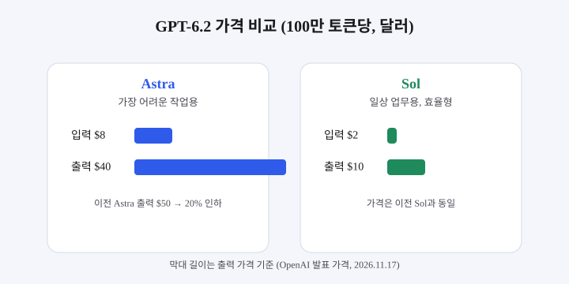
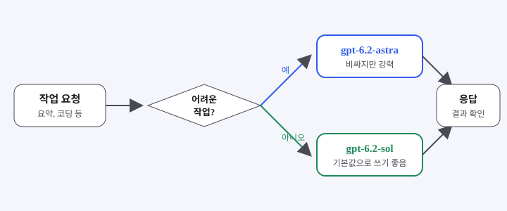

GPT-6.2 Astra·Sol: 어려운 일은 Astra, 매일 쓰는 일은 Sol, 입문 개발자가 알아야 할 것
- OpenAI가 2026년 11월 17일 GPT-6.2 Astra(가장 어려운 작업용)와 Sol(일상 작업용) 두 모델을 공개했습니다.
- Astra의 입력 가격은 100만 토큰당 8달러로 이전 Astra보다 20% 내렸고, Sol은 2달러로 가격을 유지했습니다. 성능 수치는 회사가 발표한 것입니다.
- 입문 개발자는 기본값을 Sol로 두고, 결과가 부족할 때만 Astra로 올리는 습관을 익히면 비용을 크게 아낄 수 있습니다.
2026년 11월 17일, OpenAI가 GPT-6.2 계열 두 모델을 한꺼번에 내놓았습니다. 이름이 비슷해서 헷갈리기 쉽지만, 역할은 분명히 나뉩니다. 언론 보도는 주로 두 가지에 집중했습니다. 하나는 Astra 가격이 내려갔다는 점이고, 다른 하나는 성능 수치 대부분이 OpenAI 자체 발표라는 점입니다.
01한눈에 보기
식당에 비유하면 이해가 쉽습니다. Astra는 주방장이 공들여 만드는 특별 요리이고, Sol은 매일 나가는 든든한 정식입니다. 특별 요리는 맛은 좋지만 값이 비싸고, 정식은 값이 싸고 빠르지만 아주 어려운 요리까지는 맡기기 어렵습니다. 개발자가 할 일은 주문마다 어떤 메뉴를 고를지 정하는 것입니다. OpenAI도 Astra를 "가장 어려운 프로젝트용", Sol을 "일상 업무용 효율형 모델"이라고 설명합니다.

API ID: 코드에서 모델을 부를 때 쓰는 이름입니다. 이번 발표에서는 gpt-6.2-astra, gpt-6.2-sol입니다.
벤더 발표 수치: 모델을 만든 회사가 자기 기준으로 낸 성능 결과입니다. 참고는 할 수 있지만 그대로 믿기 전에 독립 평가를 함께 봐야 합니다.
02어떻게 동작하나요
개발자 입장에서 모델은 API로 불러 쓰는 부품입니다. 요청을 보내면 모델이 답을 돌려주고, 사용량만큼 요금이 붙습니다. GPT-6.2 계열은 이 흐름 자체는 기존과 같습니다. 달라지는 것은 두 가지입니다. 첫째, 같은 작업을 어느 모델로 보내느냐에 따라 비용이 크게 달라집니다. 둘째, OpenAI는 Sol을 "Astra 성능에 가깝지만 비용은 훨씬 낮다"고 설명합니다. 그래서 입문 단계에서는 Sol로 시작해 결과를 확인하고, 모자란 경우에만 Astra로 바꾸는 것이 합리적입니다.
가격표를 보면 차이가 더 분명합니다. Astra는 입력 100만 토큰당 8달러, 출력 100만 토큰당 40달러입니다. Sol은 입력 2달러, 출력 10달러입니다. 출력 가격이 네 배 차이가 나므로, 긴 답을 많이 만드는 작업일수록 Sol을 쓰는 쪽이 유리합니다.

03왜 지금 화제인가요
발표 직후 가장 많이 언급된 부분은 OpenAI가 공개한 성능 향상 수치입니다. 회사는 에이전트 평가인 Agents' Last Exam에서 Astra가 이전 GPT-6 Astra보다 5.2점 높고, 비용은 3분의 1 미만이라고 밝혔습니다. 과학 작업 평가인 Terminal-Bench Science 0.1에서는 9%p 높아졌다고 했습니다. 문서 작업 평가 GDPval v2에서는 6.2점 올랐으면서도 출력 토큰은 22% 줄었다고 합니다. 이 세 수치 모두 OpenAI 기준이라, 실제 프로젝트에서 같은 폭으로 좋아진다는 뜻은 아닙니다.
독립 평가 쪽 결과도 함께 봐야 합니다. Decrypt는 Artificial Analysis의 지능 지수를 인용해, Astra 62점, Claude Fable 5.2 65점, Sol 57점이라고 전했습니다. Astra는 이전 GPT-6 Astra보다 5점 높지만, 경쟁 모델보다는 앞서지 않습니다. 같은 기사는 독립 테스트에서 코딩 에이전트 성능은 개선이 없었다는 점도 짚었습니다. TestingCatalog는 ARC Prize가 올린 ARC-AGI-3 결과(100%)를 인용했지만, 이 역시 특정 평가 조건의 결과입니다.
04관련 나라·기업
| 구분 | 이름 | 어떤 관련이 있나 |
|---|---|---|
| 기업 | OpenAI | Astra와 Sol을 만들고 API와 ChatGPT에 공개했습니다. |
| 기업 | Anthropic | 가격과 성능을 비교하는 기준 모델(Claude Fable 5.2)을 만든 회사입니다. |
| 평가 기관 | Artificial Analysis | 여러 모델을 같은 조건에서 재어 지능 지수를 공개하는 독립 평가 기관입니다. |
| 평가 기관 | ARC Prize | 추론 능력을 재는 ARC-AGI 벤치마크를 운영하는 단체입니다. |
05기존 방식과 무엇이 다른가
이전 세대 Astra와 비교하면 가격이 가장 큰 변화입니다. 같은 성격의 작업을 기존보다 싸게 돌릴 수 있게 된 점이 실무에서 가장 체감될 부분입니다.
| 비교 항목 (100만 토큰 기준) | 이전 Astra (GPT-6) | GPT-6.2 Astra | GPT-6.2 Sol |
|---|---|---|---|
| 입력 가격 | 10달러 | 8달러 | 2달러 (변동 없음) |
| 출력 가격 | 50달러 | 40달러 | 10달러 (변동 없음) |
| 캐시된 입력 가격 | 1달러 | 0.40달러 | 0.10달러 |
| 권장 용도 | 고난도 작업 | 가장 어려운 프로젝트 | 일상 업무, 코딩, 에이전트 작업 |
캐시된 입력은 같은 긴 문맥을 반복해서 보낼 때 적용되는 할인 가격입니다. 반복 호출이 많은 서비스라면 이 항목이 총비용에 큰 영향을 줍니다.
06직접 해 보기
아래 순서는 개념을 잡기 위한 설명입니다. 실제 코드는 OpenAI 공식 문서의 최신 예제를 확인한 뒤 따라 해 주세요. 이 글에서는 검증한 API 이름(gpt-6.2-sol, gpt-6.2-astra)만 사용했습니다.
- OpenAI 개발자 플랫폼에서 계정을 만들고 API 키를 발급받습니다. 키는 코드에 직접 적지 않고 환경 변수로 관리하는 것이 기본입니다.
- 요약, 번역, 문장 다듬기처럼 결과를 눈으로 쉽게 확인할 수 있는 작업을 하나 고릅니다. 먼저 gpt-6.2-sol로 한 번 호출하고 응답 시간과 사용 토큰 수를 적어 둡니다.
- 같은 입력을 gpt-6.2-astra로 바꿔 호출하고, 두 답을 나란히 비교합니다. 품질 차이가 작다면 Sol을 기본값으로 두세요.
- 비교 결과를 표로 남깁니다. 작업 종류별로 어느 모델이 필요한지 감을 잡는 것이 이 연습의 목표입니다.
07주의할 점과 한계
- 성능 수치의 대부분은 OpenAI가 발표한 것입니다. 독립 평가에서는 Astra가 Claude Fable 5.2보다 낮게 나왔다는 보도가 있으므로, 우리 프로젝트에서 직접 측정해 보는 것이 가장 확실합니다.
- 발표 페이지에는 컨텍스트 창(한 번에 읽을 수 있는 최대 길이)이 명시되어 있지 않았습니다. 긴 문서를 다루기 전에 공식 문서에서 확인해야 합니다.
- 언론 보도에 따르면 일부 구독 계정에서는 발표 직후 모델이 바로 보이지 않았습니다. 롤아웃 속도는 계정마다 다를 수 있습니다.
- OpenAI의 자체 준비성 평가에서 사이버 보안 위험은 가장 높은 Critical, 생물·화학 위험은 High 등급으로 분류되었습니다. 보안 관련 작업에 쓸 때는 사용 정책을 먼저 읽어 보세요.
- 가격은 발표 시점의 정가입니다. 요금 정책은 바뀔 수 있으니 실제 청구 전에 가격 페이지를 다시 확인하세요.
08정리
GPT-6.2 Astra와 Sol은 "어려운 일은 비싼 모델, 매일의 일은 싼 모델"이라는 선택지를 분명하게 보여 줍니다. 입문 개발자에게 가장 중요한 변화는 Astra 가격이 내려갔고, Sol이 가격을 유지하면서도 성능 개선을 함께 받았다는 점입니다. 같은 기능을 더 싸게 만들 수 있게 된 셈입니다.
다만 발표된 성능 수치는 대부분 회사 기준이고, 독립 평가에서는 경쟁 모델과 엇갈리는 결과도 나왔습니다. 그래서 첫걸음은 화제가 된 모델을 바로 쓰는 것이 아니라, 내가 만들 기능에서 Sol과 Astra의 결과를 직접 비교해 보는 것입니다. 측정 기록이 쌓이면 어떤 모델을 쓸지 스스로 판단할 수 있게 됩니다.
09참고한 글
- Introducing GPT-6.2 Astra and Sol OpenAI · 2026.11.17 (발표 페이지, 발행 시각 미표시)
- OpenAI GPT-6.2 Astra·Sol launch 보도 Digital Trends · 2026.11.17
- OpenAI launches GPT-6.2 Astra and Sol on ChatGPT and APIs TestingCatalog · 2026.11.17
- OpenAI GPT-6.2 Astra challenges Anthropic on price, but not every benchmark Decrypt · 2026.11.17